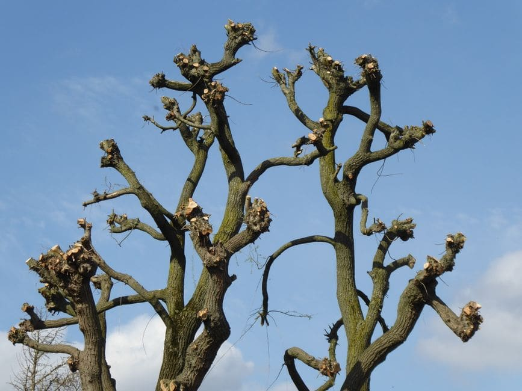

Winnipeg's trees endure a brutal annual cycle — deep freeze winters that regularly dip below -30°C, heavy spring snowfalls, summer thunderstorms rolling off the prairies, and Dutch elm disease pressure that never really lets up. That combination takes a toll. Most homeowners in neighbourhoods like River Heights, Transcona, St. Vital, and Wolseley wait until a branch has already come down on a fence or a parked car before they think about pruning. The truth is, your trees are giving you warning signs well before that happens. This checklist will help you read them.

Why Timely Tree Pruning Matters More in Winnipeg Than in Most Cities
Winnipeg sits in a climate zone that is genuinely hard on urban trees. The freeze-thaw cycles of a Manitoba spring crack bark, open wounds to fungal infection, and leave branches structurally weakened in ways that aren't always visible from the ground. Add to that the legacy of American elm trees throughout older neighbourhoods — many of which are already under stress — and the risk of neglected pruning compounds quickly. A branch that looks merely overgrown in June can become a projectile in a July hail storm.
Proactive tree trimming and pruning in Winnipeg is far less expensive than emergency tree removal after storm damage, and it extends the working life of mature trees that can take decades to replace.
The Warning Signs Checklist: Does Your Tree Need Pruning?
Work through this checklist from the ground. You don't need to climb anything — most of these signs are visible from your yard or sidewalk.
1. Dead, Hanging, or Broken Branches (Widow-Makers)
Dead branches that are still attached — sometimes called widow-makers — are the most urgent pruning signal. In Winnipeg, these often appear after winter ice storms or the wet, heavy snow events common in March and April. Look for branches with no leaf-out in spring, bark that is shrivelling or peeling away, and wood that looks grey or bleached compared to surrounding growth. If a branch is hanging at an angle and still partially attached, it can fall without warning.
2. Crossing or Rubbing Branches
Two branches that cross and rub against each other create open wounds where disease and insects enter. In Manitoba, that is an open door for cytospora canker in spruce trees and other fungal pathogens that thrive in our humid summer conditions. This is especially common in fast-growing species like Manitoba maple, which is prevalent in older Winnipeg neighbourhoods.
3. The Canopy Is Growing Into Power Lines or Structures
If branches are within reach of your roofline, fence, or utility lines, you're already overdue. Manitoba Hydro and its contractors will prune branches that contact distribution lines, but their priority is clearance, not the health or appearance of your tree. It's better to manage growth proactively on your own schedule than to have utility crews do it on theirs.
4. Unusual Lean or Weight Imbalance
A tree that has developed heavy, one-sided growth puts asymmetrical load on its root system. In Winnipeg's clay-heavy soils — common across the Red River valley and through areas like Fort Garry and Windsor Park — saturated spring ground offers less root anchoring than it might appear. A lopsided canopy in wet soil is a genuine tipping risk.
5. Water Sprouts and Suckers
These are vigorous, fast-growing vertical shoots that emerge from the trunk or main branches, often after a tree has been previously topped or stressed. They look healthy but are weakly attached and rarely contribute to the tree's long-term structure. On mature elms and ash trees throughout Winnipeg, unchecked water sprouts accelerate the kind of decay that leads to early removal.
6. Reduced Clearance Over Pathways and Driveways
If you're ducking under branches to reach your garage or city sidewalk crews are trimming around your boulevard tree, the canopy has dropped below a functional clearance height. This is both a practical nuisance and a liability consideration if a low branch injures a pedestrian on a public walkway.
7. Signs of Disease or Pest Damage
Discoloured foliage, unusual bark texture, oozing wounds, or sudden die-back in one section of the canopy all suggest a problem that pruning can help contain. Removing infected wood promptly prevents spread to healthy sections of the tree and to neighbouring trees — something that matters enormously in elm-dense streets across the North End and West End.
Best Time for Tree Pruning in Winnipeg
Late fall through early spring — once trees are fully dormant and before bud break — is generally the preferred pruning window for most Manitoba species. The cold kills off many fungal spores and insects that would otherwise colonize fresh pruning cuts. That said, dead or hazardous branches should be removed as soon as they are identified, regardless of season.
Pruning Cost Estimates for Winnipeg Homeowners
| Tree Size / Scenario | Typical Winnipeg Cost Range |
|---|---|
| Small ornamental tree (under 5 m) | $150 – $350 |
| Medium shade tree (5–10 m) | $300 – $600 |
| Large mature elm or ash (over 10 m) | $600 – $1,200+ |
| Storm damage / emergency pruning | $400 – $1,500+ depending on access |
These are general ranges only. Actual quotes depend on canopy density, access, debris removal, and the number of trees. Note that storm events which damage large trees can also send debris into gutters and downspouts — if that's happened to you, it may be worth arranging a gutter inspection at the same time through a service like Eavestrough Winnipeg.
When Pruning Is Not Enough
Sometimes a tree is too far gone for pruning to make a meaningful difference. If more than half the canopy is dead, if the trunk shows significant hollow or structural rot, or if the tree has a severe lean toward a structure, full removal may be the safer and more economical path. A qualified Winnipeg arborist can make that call after an on-site assessment.
Think Your Trees Need a Professional Eye?
Get a fast, no-obligation quote from an experienced Winnipeg tree pruning crew who understand local species, bylaws, and the demands of a Manitoba climate.
Get My Free Quote